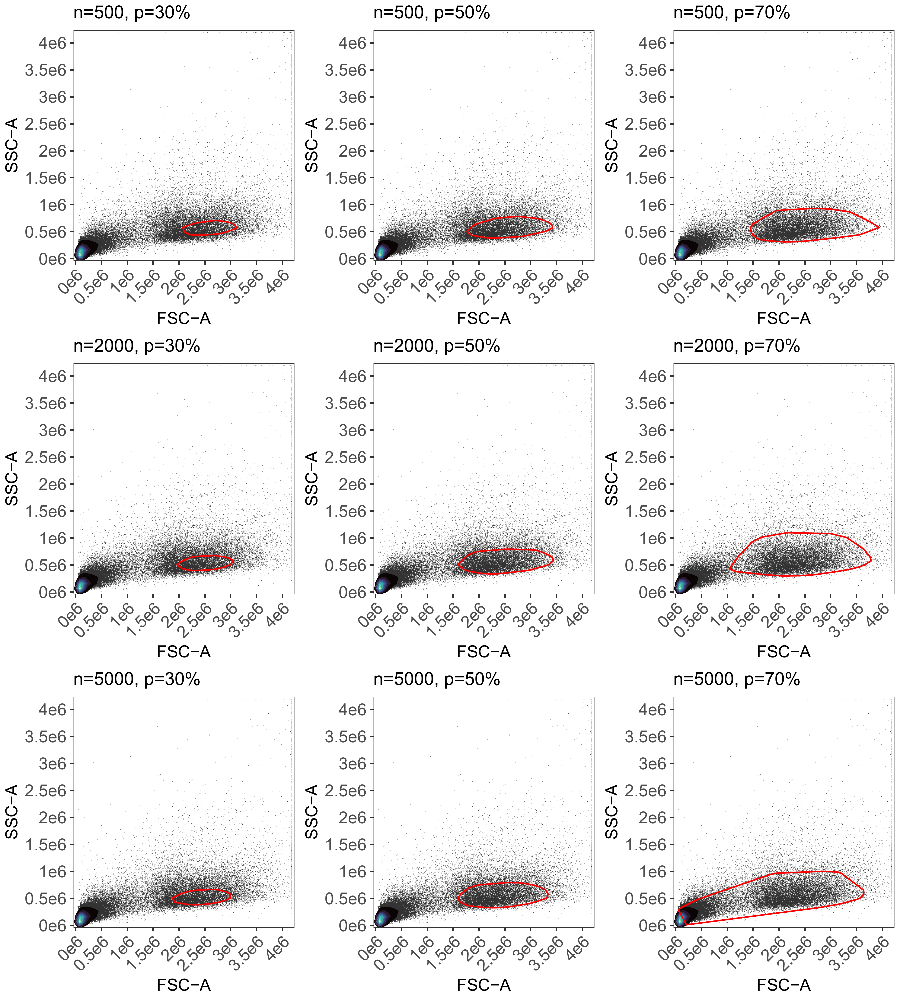

07 Controlled Gating: Landmarks and Tuning
Source:vignettes/articles/08_Advanced_Gating.Rmd
08_Advanced_Gating.RmdTuning your gates
In previous articles, we explored the default automated density-based gating. While effective for simple samples, complex datasets with multiple control types or non-leukocyte cell sources often require more control.
AutoSpectral 1.5.0 introduces a “Landmarks” gating system and a suite of tuning tools. This article covers how to use tune.gate(), define.gate.landmarks(), and define.gate.density() to pre-define your gates before processing your experiment with define.flow.control().
1. Preparing the Control File
To use these advanced functions, your control.def.file (the CSV defining your samples) needs two specific columns:
gate.name: A label for the gate (e.g., “lymphocytes”, “monocytes”, or “beads”).
gate.define: A logical (TRUE/FALSE) indicating which file(s) should be used to calculate the gate boundary.
For example, to define a lymphocyte gate using a CD4-PE control, you would set gate.name = “lymphocyte” and gate.define = TRUE for that row.
2. Tuning your Gates with tune.gate()
Before committing to a final gate, tune.gate() allows you to test multiple parameters simultaneously. It generates a grid of plots showing how different n.cells and percentiles affect the resulting boundary.
library(AutoSpectral)
asp <- get.autospectral.param(cytometer = "id7000")
# Test 3 different cell counts and 3 density percentiles
tune.gate(
control.file = "fcs_control_file.csv",
control.dir = "path/to/fcs",
asp = asp,
n.cells = c(100, 500, 2000),
percentiles = c(30, 50, 70),
gate.name = "lymphocyte"
)This will save a combined plot to ./figure_gate_tuning, helping you visually pick the best settings.
In the example below, we’re using different numbers of cells and different percentile cutoffs to try to establish a good boundary for the lymphocyte population. This is being done using the Landmarks system, with markers expressed in lymphocytes. Any of the 500/70, 2000/70 or 5000/50 would probably be fine for me.

3. Defining Gates: Landmarks vs. Density
Once you know your preferred parameters, you can generate a formal gate object using one of two methods:
Method A: define.gate.landmarks() (Recommended)
This method is highly robust for cell samples. It identifies the brightest events in the peak channel (e.g., the CD4+ population) and uses only those events to find the scatter “landmark” for your gate.
gate.lymph <- define.gate.landmarks(
control.file = "fcs_control_file.csv",
control.dir = "path/to/fcs",
asp = asp,
n.cells = 500,
percentile = 70,
gate.name = "lymphocyte"
)Method B: define.gate.density()
This uses the original AutoSpill-style logic, searching for the densest region in the scatter plot. It works well with beads and may be best for samples where fluorescence “landmarks” aren’t available.
gate.beads <- define.gate.density(
control.file = "fcs_control_file.csv",
control.dir = "path/to/fcs",
asp = asp,
gate.name = "beads"
)With both of these methods and the updated define.flow.control(), you now get .rds files that save the gates. One of these saves the gate boundary (called gate_definition, plus whatever you’ve named it), and if you read this back into R using readRDS(), the gate can be supplied to define.flow.control(). This will allow you to recycle gates between experiments, if appropriate. You also get an .rds file that saves the gating parameters. So, if you’ve gone to a bunch of work using tune.gate(), but your next experiment may be slightly different, you can start by loading in the gating parameters rather than the gate itself. Hope that helps!
4. Passing Gates to define.flow.control()
The final step is to pass your pre-defined gates to the main experiment setup function. You provide them as a named list via the gate.list argument. Ensure the names in your list match the gate.name values in your CSV. In this example, the control file would need to have “lymphocyte” or “beads” in the gate.name column for each sample.
Any number of gates may be used if you pre-supply them.
# Combine your gates into a list
my.gates <- list("lymphocyte" = gate.lymph, "beads" = gate.beads)
# Run the experiment setup using your custom gates
flow.control <- define.flow.control(
control.dir = "path/to/fcs",
control.def.file = "fcs_control_file.csv",
asp = asp,
gate.list = my.gates
)By pre-defining gates, you bypass the default automated search, ensuring that AutoSpectral uses exactly the populations you intend for defining the spectral signatures of your fluorophores from the single-stained controls.